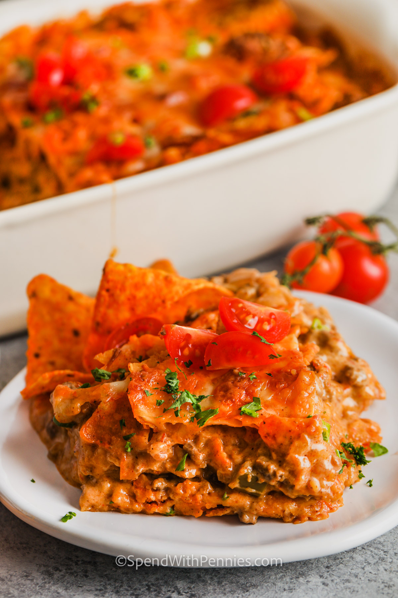

Layered Doritos Casserole

Description
Layers of Doritos create a delicious base for this casserole which is then topped with cheese and baked in the oven until brown and bubbly. Top it with our favorite taco-inspired toppings! This casserole will definitely surprise and please the family at the dinner table.
—Holly
Ingredients
- 1 family size bag Doritos, any flavor
- 1 pound lean ground beef
- 1 onion, diced
- 1 clove garlic, minced
- 1 cup salsa
- 1 package low sodium taco seasoning
- 1 cup sour cream
- 1 can cream of chicken soup
- 2 cups Tex Mex cheese, shredded & divided
- lettuce, tomato, olives for topping (optional)
Steps
- Preheat oven to 350°F.
- Cook ground beef with onion and garlic until no pink remains. Drain any fat.
- Add salsa, taco seasoning, and 1/3 cup of water. Cook until thickened, about 5 minutes, and remove from heat.
- In a large bowl, combine beef mixture, sour cream, soup and 1 cup of cheese.
- Slightly crush Doritos (not completely, you don't want crumbs). Layer 1.5 cups Doritos in the bottom of a 2 qt casserole dish . Top with 1/2 of the beef mixture. Repeat layers. Finally top with an additional 1 to 1.5 cups Doritos and remaining cheese.
- Spray a piece of foil with cooking spray and cover casserole.
- Bake 30 minutes covered, remove foil and bake uncovered for an additional 20 minutes or until hot and bubbly. Top with lettuce, tomatoes and olives if desired.